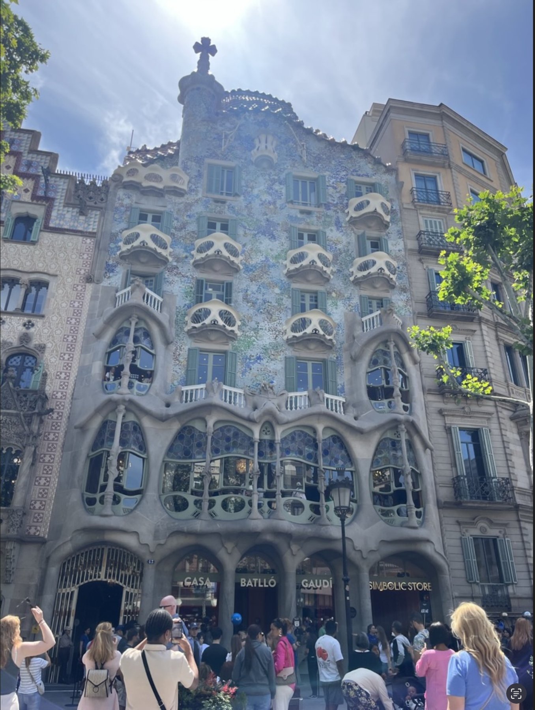
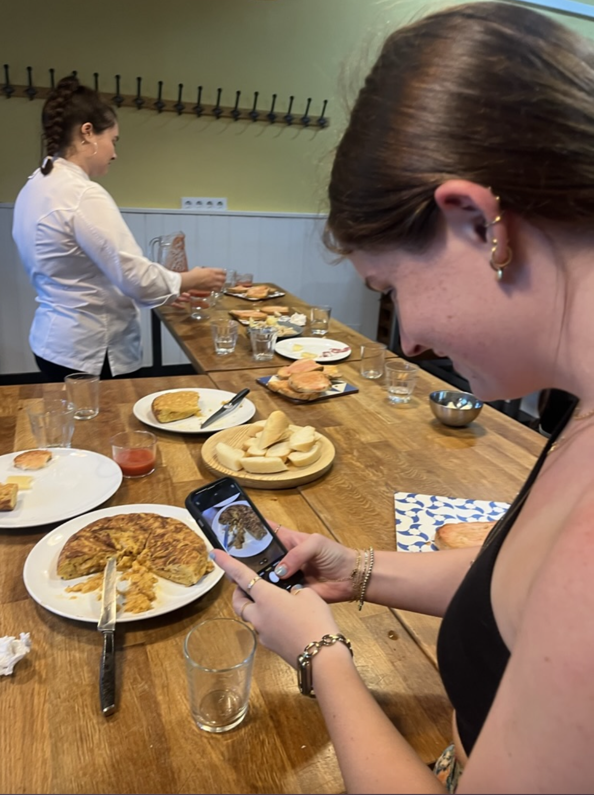
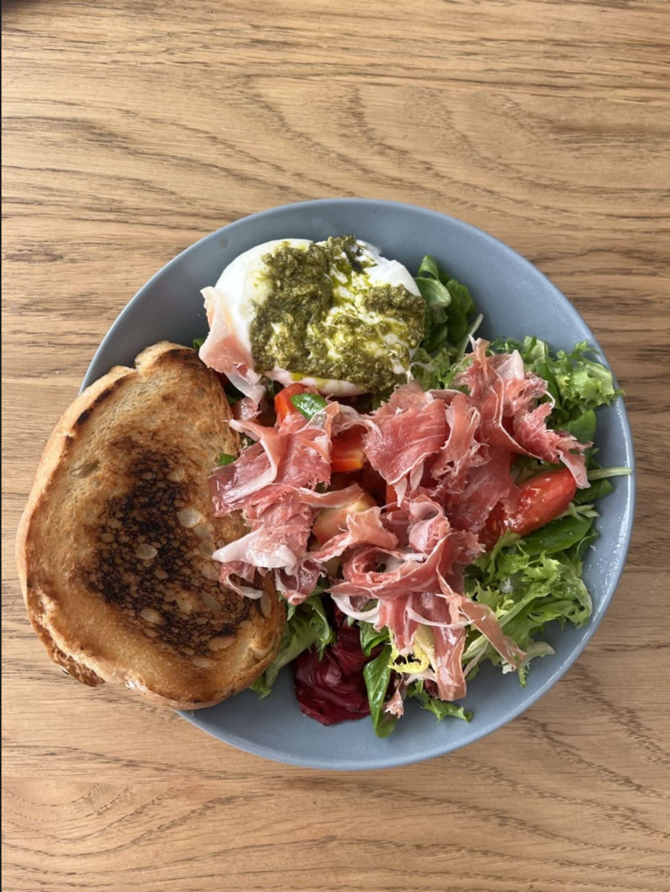
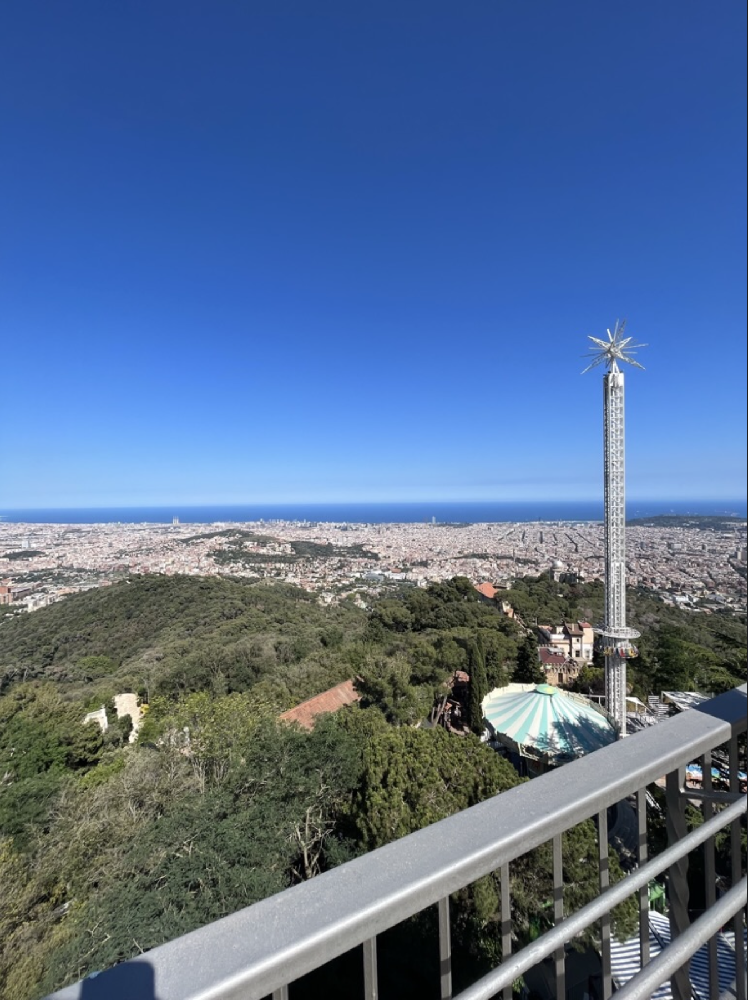

I’ll admit, studying wasn’t exactly the most exciting part of studying abroad. However, I ended up taking two absolutely fascinating classes. The first was a course on the history and politics of Spain. History had always been one of my favorite subjects growing up, but it wasn’t something I could pursue in college since it didn’t align with my major. So, it was incredibly enjoyable to dive back into learning history—especially the rich and complex history of Spanish politics.
What made this class particularly special was how it blended traditional learning with exploration. Much of the course involved wandering around various places in Barcelona, observing and learning about the historical significance of even the most seemingly random spots. This picture, for example, is of a very famous building designed by the renowned architect Antoni Gaudí, who later went on to construct the Sagrada Familia. This structure was created for a prominent Spanish family and showcases Gaudí’s close ties with the Spanish royal family.
It was so fascinating to immerse myself in Barcelona’s history through this class and experience the city in such a meaningful way!


I went on this adventure with one of my closest friends, Maddie, who is pictured here, thoughtfully observing our somewhat subpar efforts in a tapas cooking class. Maddie is one of the kindest, most selfless, and well-grounded people I know. I was incredibly nervous about embarking on this journey, but having Maddie by my side eased so many of those anxieties. She was my go-to activity and travel buddy throughout the trip, and I couldn’t have chosen a better person to share these experiences with!

One of the things I always look forward to when traveling is the food. Trying new cuisines feels like one of life’s true luxuries, and I always make it a point to fully embrace the culinary experiences of wherever I am. Barcelona’s tapas-style meals were a unique experience; while they took some getting used to, I quickly became a fan. The format allowed me to expand my palate and try as many new dishes as possible.
That said, my favorite culinary aspect of Barcelona wasn’t the restaurants—it was the grocery stores. They were stocked with high-quality meats and cheeses at a fraction of the price you’d pay in America. I especially loved making my own lunches, like this Sorrento ham and burrata salad I ate almost weekly. Enjoying those meals on my “princess” balcony, while people-watching below, became one of my favorite rituals.

One of the things I love most about breaks, especially summer breaks, is being able to run again. Once it gets cold here at Michigan, it feels like it never really warms up. By April, I’m itching to get outside and run. Though the heat in Barcelona was sometimes a bit much, it was such a fun city to run in. Exploring the city on foot was a fantastic way to take in all it had to offer.
Maddie was also training for her half marathon, so we had fun staying active together. One of our most memorable adventures was hiking Mount Tibidabo. It was a long and challenging hike, and we were very confused when we reached the top to find that no one else seemed even remotely as red or sweaty as we were. Later, we discovered that there was a shuttle most people had taken! Despite this, the effort was completely worth it for the stunning view of the city.
{kind=link}
{kind=link}
{kind=link}
{kind=link}